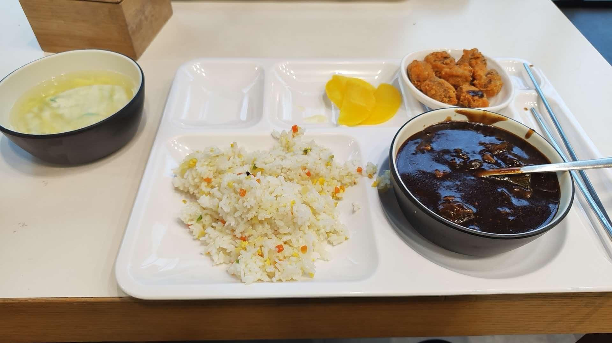
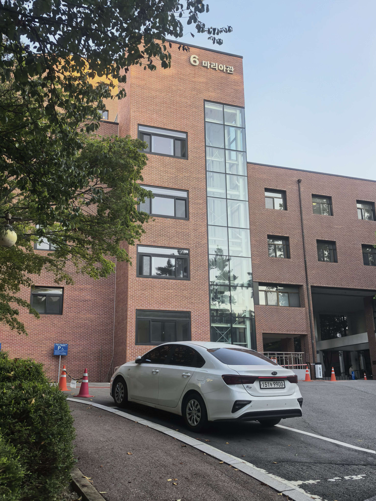
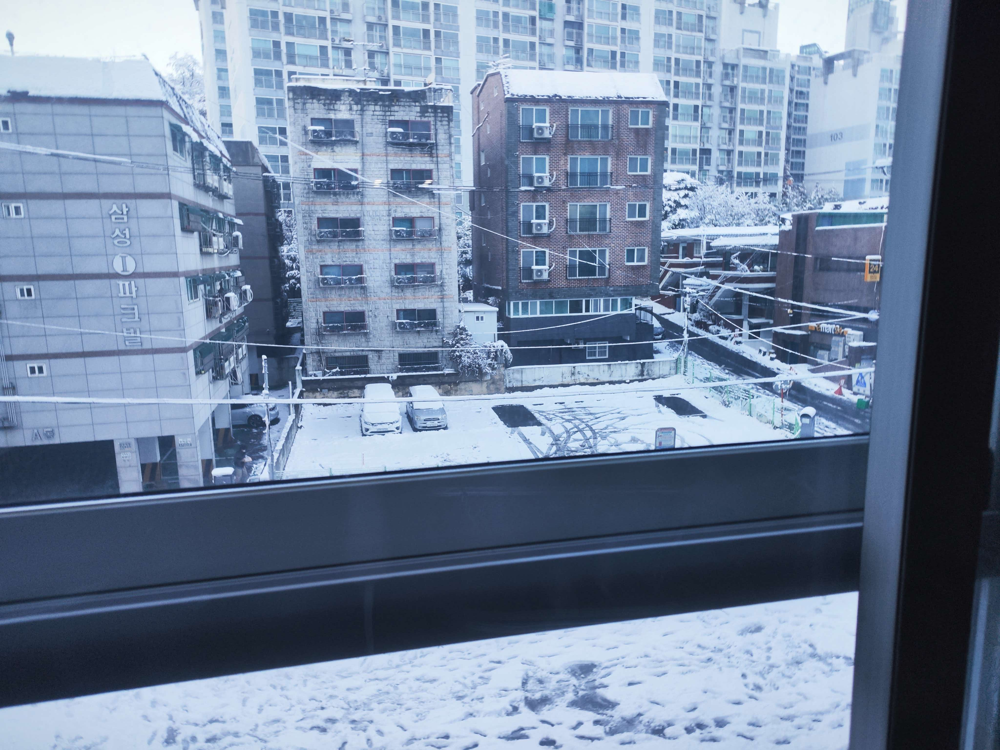

학생식당

학생과 교수님이 함께 식사하는 곳입니다. 건물 1층과 2층을 식당으로 사용하며, 점심시간에는 여러 건물에서 온 사람들로 가장 붐빕니다.
추천 이유: 수업 사이에 끼니를 해결하기 좋고 여러 사람을 만날 수 있어 하루에 한 번은 꼭 들르게 되는 장소입니다.
웹프로그래밍 4주차 · JavaScript
2주차에 만든 세 장소를 하나의 화면으로 합쳤습니다. 아래 버튼을 누르면 설명과 지도가 페이지를 새로고침하지 않고 함께 바뀝니다.
버튼을 누르면 아래 설명과 오른쪽 지도가 함께 바뀝니다.

학생과 교수님이 함께 식사하는 곳입니다. 건물 1층과 2층을 식당으로 사용하며, 점심시간에는 여러 건물에서 온 사람들로 가장 붐빕니다.
추천 이유: 수업 사이에 끼니를 해결하기 좋고 여러 사람을 만날 수 있어 하루에 한 번은 꼭 들르게 되는 장소입니다.

학교 정문에서 오르막을 올라오면 가장 먼저 보이는 건물입니다. 컴퓨터 실습실이 있어 전공 수업과 실습이 주로 이곳에서 열립니다.
추천 이유: 전공 수업과 실습이 모두 이 건물에서 이루어져서 하루 중 가장 오래 머무는 장소입니다.

학교 정문 오른쪽으로 곧장 가면 보이는 교외 기숙사입니다. 겨울에는 눈이 쌓인 풍경이 특히 예뻐서 사진을 찍는 사람이 많습니다.
추천 이유: 수업이 끝난 뒤 쉬고 다음 날을 준비하는 공간이라 하루의 시작과 끝을 함께하는 장소입니다.
학생식당 · 위도 37.4864, 경도 126.8012